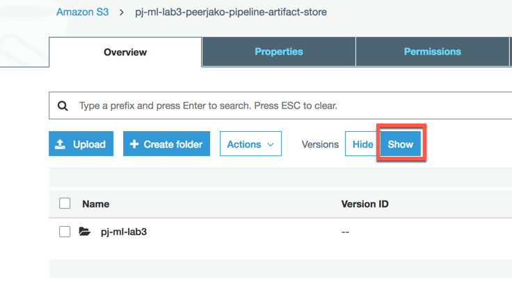

Clean up - ML Immersion Day
- From Lab3, delete the CloudFormation stacks by going to the CloudFormation console page. For each of the following items, select the corresponding row in the table, then click Actions -> Delete Stack
- Production Endpoint Stack: prod-[Your-Initials]-ml-id-lab3
- QA Endpoint Stack: qa-[Your-Initials]-ml-id-lab3
- While waiting for the stacks to be deleted, delete all objects in the bucket ending with …artifact-store. The object in this bucket are versioned so in order to delete all objects click the Versions Show button.

CloudFormation will not delete a stack with S3 buckets that are not empty. And it will not delete a stack with resources that another stack is depending on. Therefore both steps above need to be done in order for the next step to succeed.
When the two steps above are done, delete the CloudDeploy pipeline stack: [Your-Initials]-ml-id-lab3
From Lab 2 delete the Sagemaker resources manually using the console. This is done by moving the respective console table, selecting the resource, and use the Actions -> Delete command.
- Development Endpoints
- Development Endpoint configurations
- Development Notebook instances
- From Lab 1delete the following resources
- Delete all data in S3 bucket [Your-Initials]-ml-id-lab
- athena-results folder
- movielens-data folder
- sagemaker folder
- Delete the CloudFormation stack [Your-Initials]-ml-lab1
- Delete the resources that were created from Glue, by selecting the resource and clicking Actions -> Delete
- You're done!